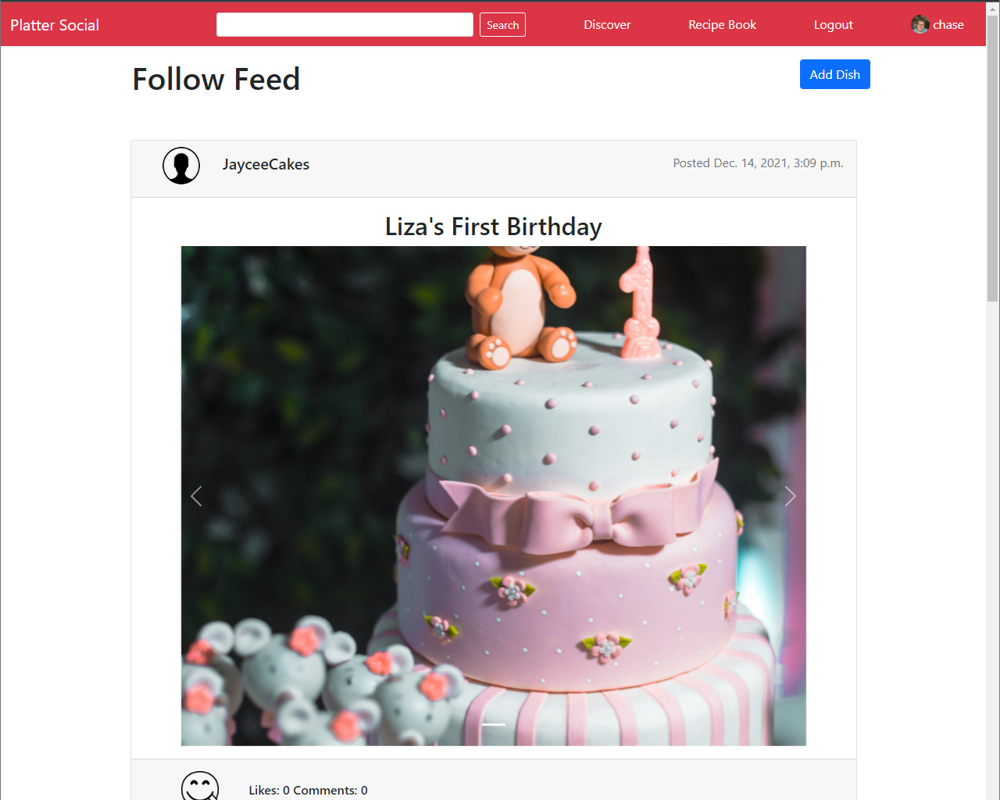
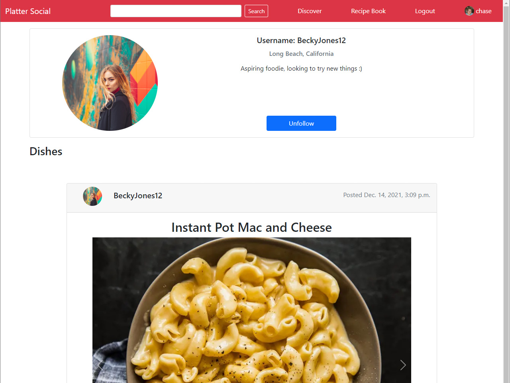
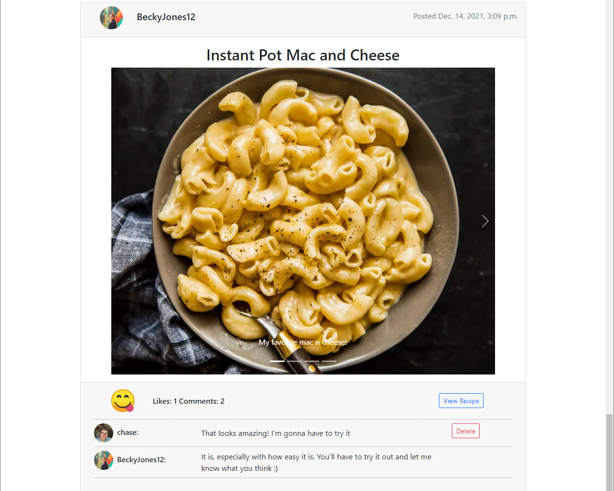
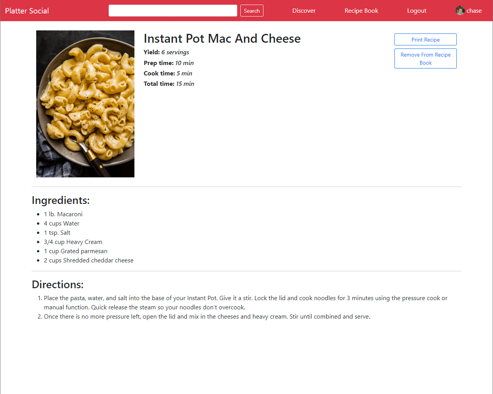

@login_required
def follow_feed(request):
following = FollowUser.objects.filter(user=request.user)
profile_list = list()
for follow in following:
profile_list.append(follow.follow)
posts = Post.objects.filter(profile__in=profile_list).order_by('-time', '-id')
paginator = Paginator(posts, 10)
page = request.GET.get('page')
posts = paginator.get_page(page)
images, comments, like_counts, likes = detail_view(request, posts)
if request.method == "POST":
check_comment_change(request)
check_like(request)
return render(request, 'myapp/follow_feed.html',
{'posts': posts, 'images': images, 'comments': comments, 'like_counts': like_counts, 'likes': likes})